Lab 9: Mapping
Task 1: Orientation Control
I chose to use orientation control for this lab, because I felt ToF data taken would be more accurate when the robot is stationary. The video below shows a 360˚ turn of the robot with Kp = 5, Ki = 0.05, Kd = 1.5, mostly on axis. I used higher gains for this lab because there was a lot more friction to overcome.
Errors
In the video above, the robot was about 2.5 inches drifted from its original position after a 360˚ turn. I found out that the robot strays between 1.5 to 2.5 inches (38 to 64mm) per one revolution. The datasheet for the ToF sensor shows that the ranging error in long mode is ± 20 mm in long mode. I decided to calculate the RSS to quantify the error. Using 64mm for maximum position error and 51mm for average position error, with 20mm for the ToF error, RSS_avg = 54.8, RSS_max = 67. This means, in a 4m x 4m square room, average error would be 2.74% of 2000, and maximum error would be 3.35% of 2000.
The yaw values measured by the DMP on the IMU had negligible drift for one rotation, therefore wasn't included in the RMS calculation. Additionally, before starting each scan, I made sure to restart the robot so drift doesn't accumulate.
Below is the PID plot for the 360˚ rotation.
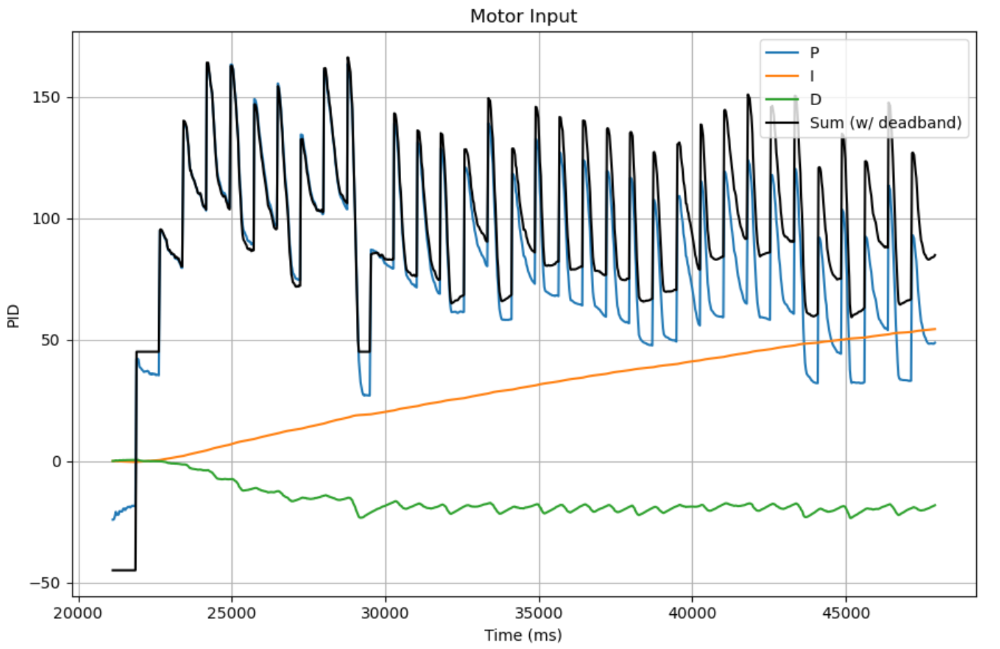Task 2: Reading Distances
Below is the code I used for mapping. Similar to lab 8, I created a sequence of 3 states, where the robot turns, stops orientation PID when it reaches the desired angle, stops for 750 ms to collect distance data using the ToF sensor and updating the next desired angle.
*DISCLAIMER* The world I mapped was not ideal, as it was not a completely closed off space and consisted many gaps and cables between the floor and obstacles. This caused a lot of noise and inconsistent data resulting in a messy final plot, but I am fairly confident that it works as intended.
This is what my 'world' looked like 😃
I defined the left end of the ruler as the origin (0, 0).

This photo is to show the open space outside the world that made the plot very messy.

Transformation
To convert the polar plots to the global reference, I used a matrix transformation, where
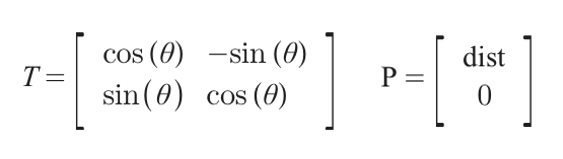I placed the robot at 4 different points:
Point 1: (-1, 1)
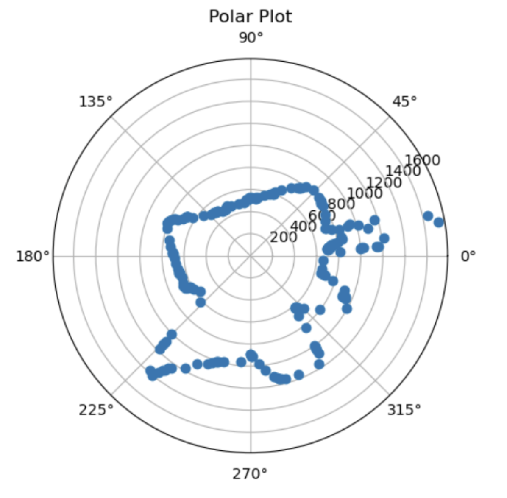 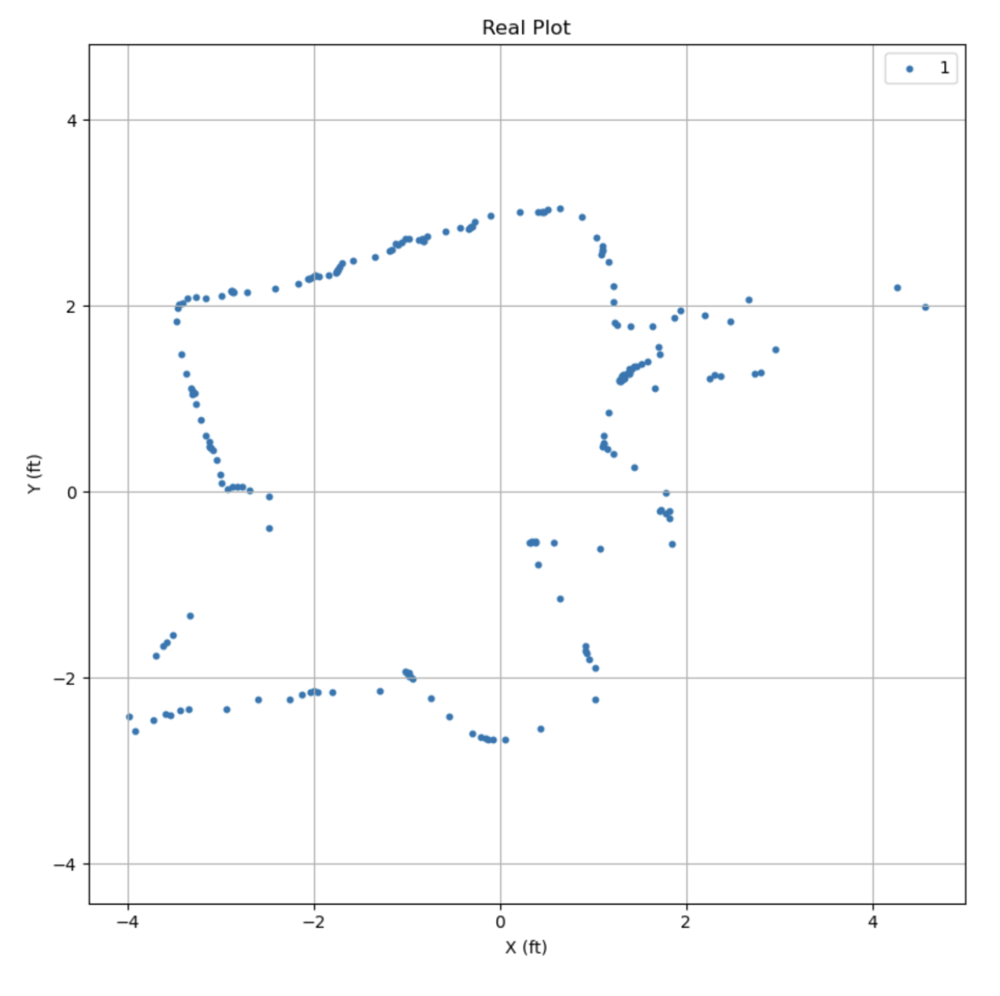Point 2: (2, 0)
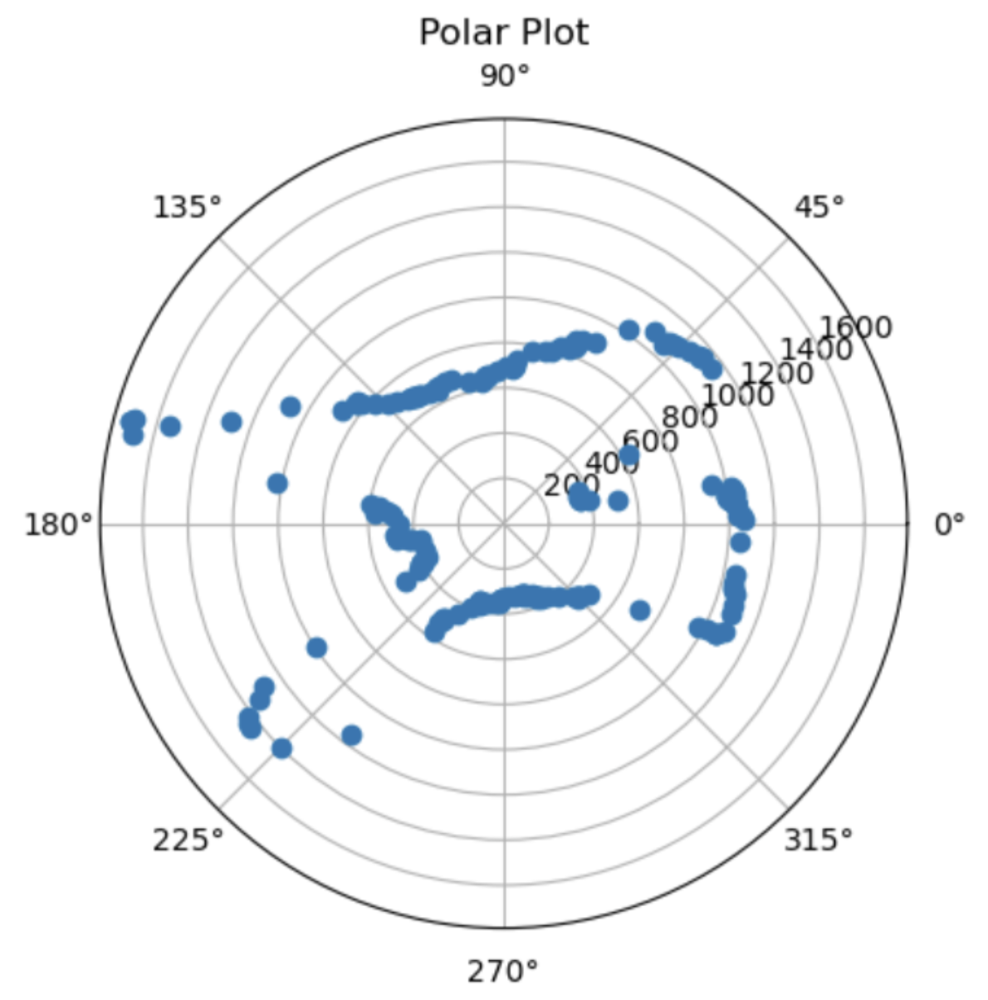 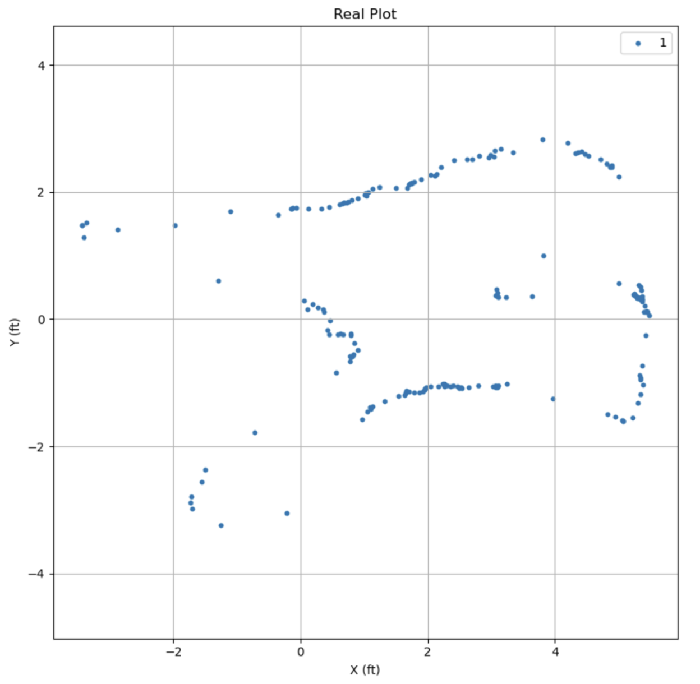Point 3: (1.5, -1)
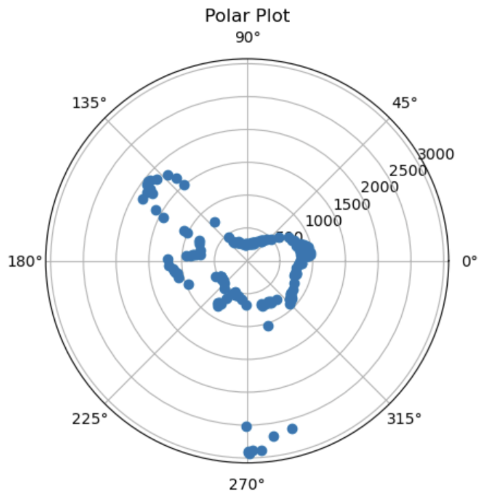 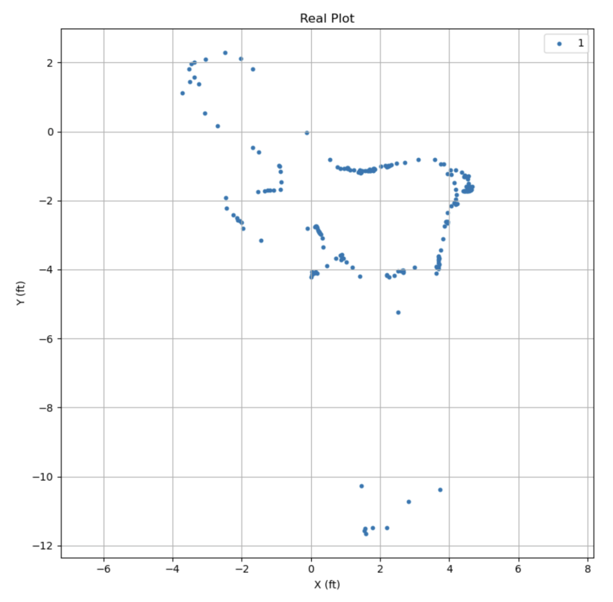Point 4: (0, -1)
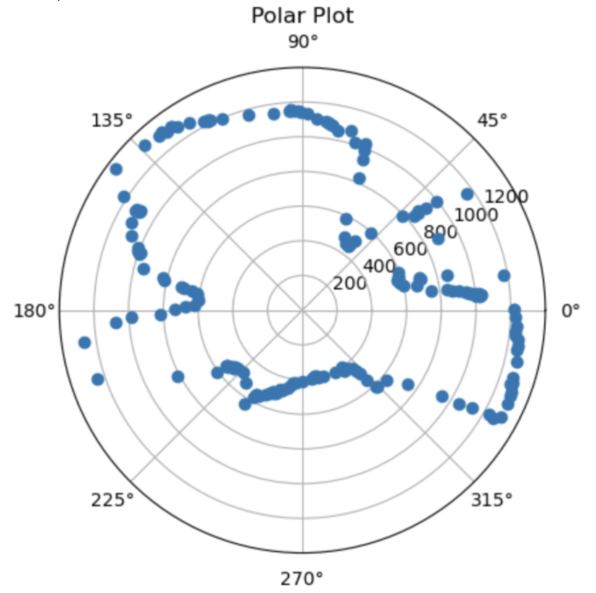 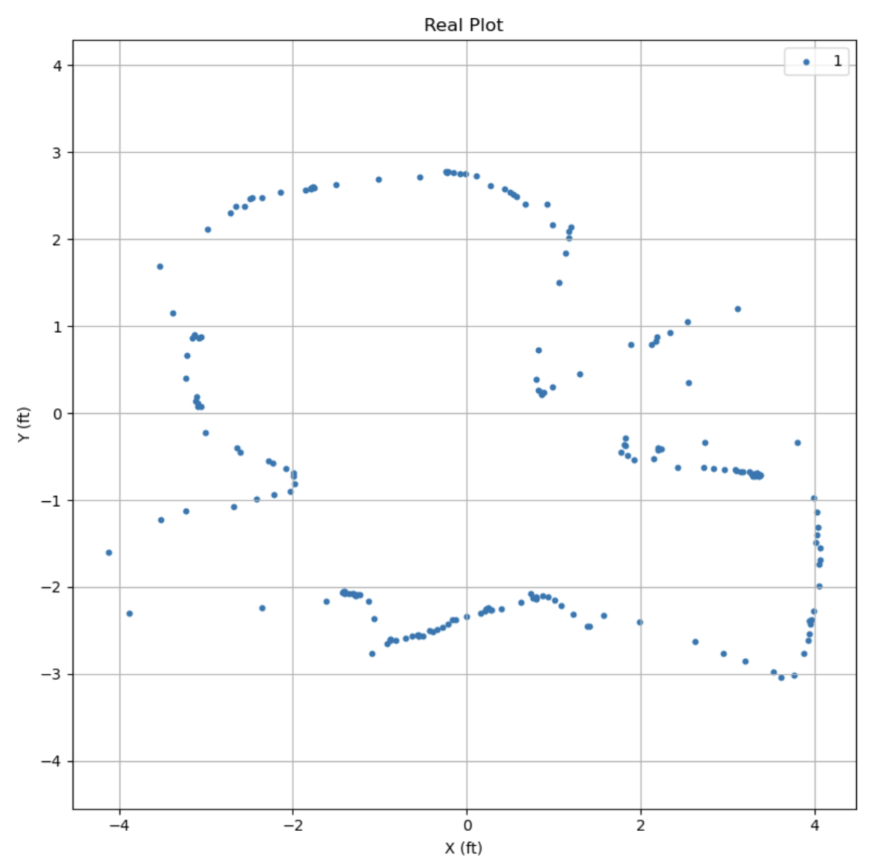Task 3: Merging & Plotting Readings
Map of all real plots merged together:
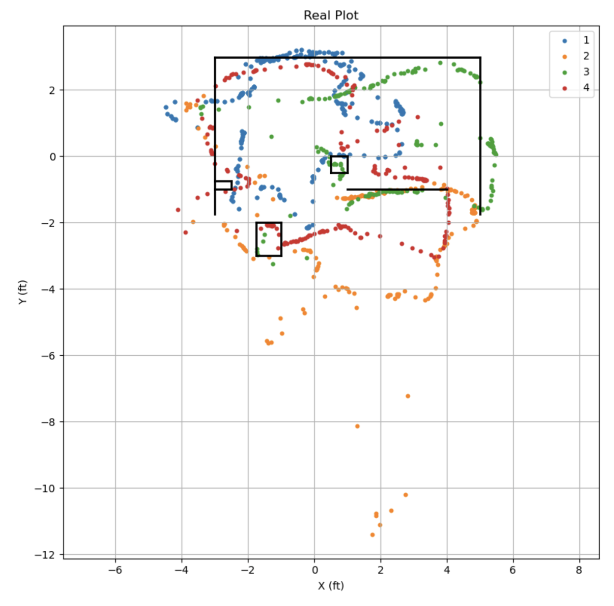References and Acknowledgements
- Jeffery for helping me debug, spending more time sighing at my terrible code than doing his own lab work
- Jeffery again for lending me his robot because mine broke, and also letting me setup a world at his place
- Ming He's website for transforming plots
- Bootstrap template for website